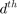
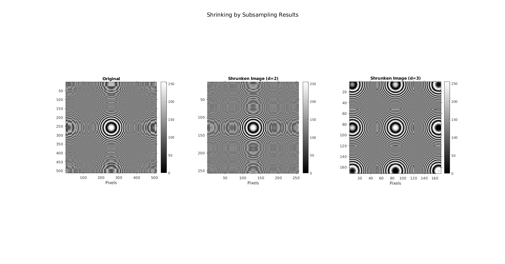
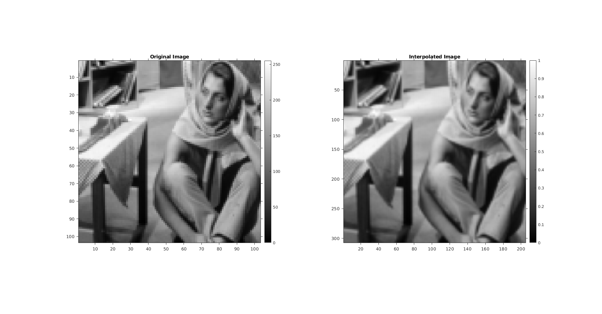
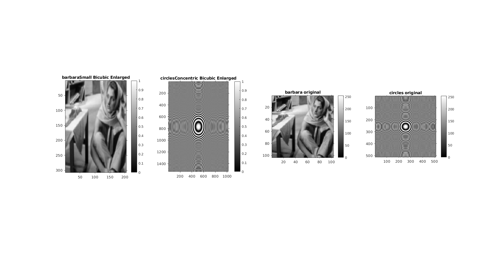
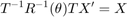
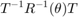
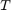
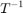
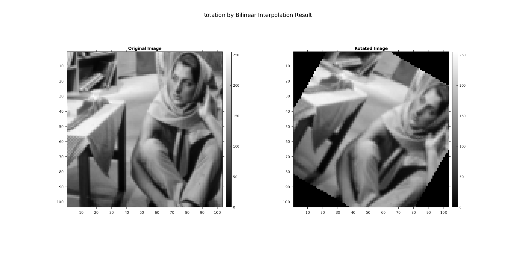

Contents
MyMainScript
tic;
Part a)
Shrinking images using subsampling.
The subsampling is done by the function myShrinkImageByFactorD which selects every  pixel from the rows and columns.
% Read image Concentric Circles image img = imread('circles_concentric.png'); % Subsampling % Subsampling the original images by choosing the dth pixel d = 2; subimg1 = myShrinkImageByFactorD(img,d); d = 3; subimg2 = myShrinkImageByFactorD(img,d); % Display figure1 = figure('Position', [0, 0, 5000, 5000]); % Original Image subplot(1,3,1), imshow(img); title('Original'); xlabel('Pixels'); colorbar; axis on; % Subsampled Image (d=2) subplot(1,3,2), imshow(subimg1); title('Shrunken Image (d=2)'); xlabel('Pixels'); colorbar; axis on; % Subsampled Image (d=3) subplot(1,3,3), imshow(subimg2); title('Shrunken Image (d=3)'); xlabel('Pixels'); colorbar; axis on; sgtitle('Shrinking by Subsampling Results');
Conclusion
The outputs are displayed side by side with the original image for reference in which Moire Effects are clearing visible.
Part b)
Image reading and interpolation
A=imread("barbaraSmall.png"); Bi=myBilinearInterpolation(A); % Display figure2 = figure('Position', [0, 0, 5000, 5000]); subplot(1,2,1), imshow(A); title('Original Image') axis on colorbar subplot(1,2,2),imshow(mat2gray(Bi)); title('Interpolated Image') % changed aspect ratio of axes to make the image again a square image daspect([205 307 307]) axis on colorbar
Part c)
Reading image and interpolation
A=imread("barbaraSmall.png"); Ni=myNearestNeighbourInterpolation(A); %Display figure3 = figure('Position', [0, 0, 5000, 5000]); subplot(1,2,1),imshow(A); title('Original Image') axis on colorbar subplot(1,2,2),imshow(mat2gray(Ni)); title('Interpolated Image') % changed aspect ratio daspect([205 307 307]) axis on colorbar
Conclusion
Even after having the same resolution as Bilinearly interpolated image, image is not that much smooth
Part d)
i1= "barbaraSmall.png"; i2= "circles_concentric.png"; image1 = myBicubicInterpolation(i1); image2 = myBicubicInterpolation(i2); figure4 = figure('Position', [0, 0, 5000, 5000]); subplot(1,4,1),imshow(mat2gray(image1)); colorbar; axis on; title("barbaraSmall Bicubic Enlarged"); subplot(1,4,2),imshow(mat2gray(image2)); colorbar; axis on; title("circlesConcentric Bicubic Enlarged"); subplot(1,4,3),imshow(i1); colorbar; axis on; title("barbara original"); subplot(1,4,4),imshow(i2); colorbar; axis on; title("circles original");
Part e)
The results are stored in the reports directory, in which the image is enlarged using different interpolation methods.
Part f)
Image Rotation using Bilinear Interpolation.
The pixel is grid rotated using the mapping  where  takes the coordinates of the rotated image to the coordinates of the original image and then Bilinear interpolation is used at point X to get the corresponding Intensity.
 takes the coordinates of the pixels from the original coordinate system to the center of frame coordinate system and vice-versa for .
% Reading the image img = imread('barbaraSmall.png'); % Rotating the pixel coordinates deg = 30; deg = deg2rad(deg); rotimg = myImageRotation(img,deg); % Display figure5 = figure('Position', [0, 0, 5000, 5000]); % Original Image subplot(1,2,1), imshow(img); title('Original Image'); colorbar; axis on; subplot(1,2,2), imshow(rotimg); title('Rotated Image'); colorbar; axis on; sgtitle('Rotation by Bilinear Interpolation Result');
Conclusion
In the Original Image is rotated by 30 degrees clockwise using bilinear interpolation, and it can be noticed that the edges after rotation are not smooth and appear to be jagged due to the quantization of coordinates.
toc;
Elapsed time is 6.157901 seconds.